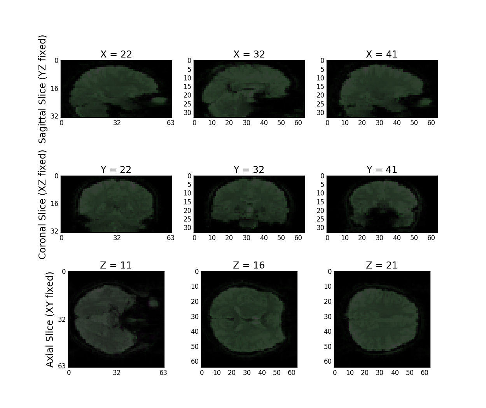
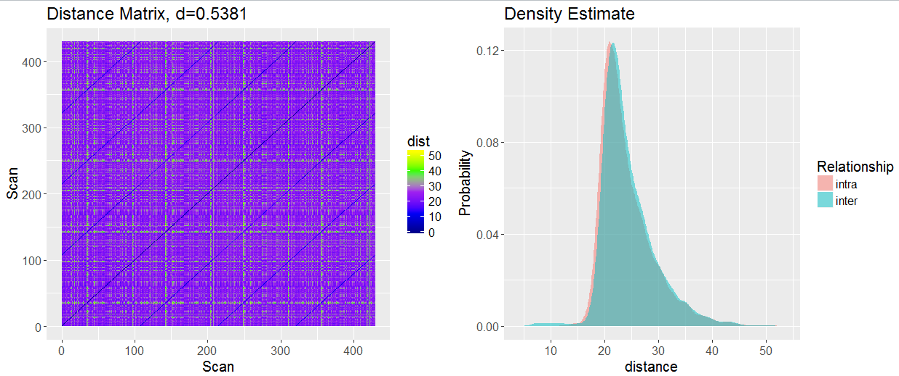

Protocol
- Slice Timing Correction: slicetimer
- User Input: choice of 3 common sequences (Interleaved, Bottom-up, Top-down)
- Also accepts: metadata file
- 6 DOF Motion Parameter Estimation with mcflirt and apply with flirt
| Step |
FNGS |
CPAC |
fmriprep |
| MC |
mcflirt (FSL, 0 vol) |
3dvolreg (AFNI, meanvol) |
mcflirt (FSL, middle vol); apply with ANTs |
| STC |
slicetimer (FSL) |
custom (CPAC) |
3dTshift (AFNI) |
| QA Measure |
FNGS |
CPAC |
fmriprep |
| rotations |
Y |
Y |
Y |
| translations |
Y |
Y |
Y |
| overall FDs |
Y |
Y |
Y |
| Relative FDs |
Y |
N |
Y |
QA Comparison
- Number of Volumes with FD > 1 mm from aligned volume
- FNGS: 48 (0 volume)
- CPAC: 36 (mean volume)
- fmriprep: 25 (same tool as FNGS, but they use middle, 100, volume)

| Step |
FNGS |
CPAC |
fmriprep |
| self |
epireg (FSL script that uses bbr among other things) |
use FSL bbr only |
use FSL bbr but apply with ANTs |
| template |
FNIRT with MNI152 spec file |
FNIRT |
ANTs non-linear |
| QA Measure |
FNGS |
CPAC |
fmriprep |
| bet quality (self) |
Y |
Y |
Y |
| bet quality (temp) |
Y |
N |
Y |
| func/anat |
Y |
Y |
Y |
| anatomical/MNI |
Y |
Y |
Y |
| func/MNI |
Y |
Y |
Y |
| SNR |
Y |
Y |
N |
| CNR |
Y |
N |
N |
Example of Registration Failure


- Use-case: Kara's data
- Use more-robust transforms when a brain fails
- Identify: DICE score below $0.8$
Template Alignment Quality


- CPAC DICE score: 0.831
- FNGS DICE score: 0.852
Hierarchical Registration Implications

- Unranked $d=0.538$, $p=0$, emp $d=0.501$
- Ranked: $d=0.581$, $p=0$, emp $d=0.498$
- Theoretical Chance: $0.253$
| Step |
FNGS |
CPAC |
| quadratic detrend |
Y |
Y |
| CSF mean |
Y |
Y |
| WM top 5 PC |
N |
Y |
| highpass filter |
Y |
N |
Validation/QA
| QA Measure |
FNGS |
CPAC |
| segmentation masks |
CSF, WM, GM |
CSF, WM |
| GM signal before/during/after nuisance |
Y |
N |
| signal being regressed at every step |
Y |
N |
| SNR |
Y |
N |
| CNR |
Y |
N |
Standard Practice for Everybody
- Average over voxels in a given region of interest (spatial average) at each timepoint, excluding zero-variance voxels (voxels out of the brain)
Validation/QA
| QA Measure |
FNGS |
CPAC |
| overlap of parcellation with template |
Y |
N |
| ROI timeseries |
Y |
N |
| connectome as a matrix |
Y |
N |
Connectome Comparison


Runtime
- fmriprep: 40000 seconds (11 hours)
- Why? ANTs registration/freesurfer segmentations. also, needed 4 cores to get this runtime for 1mm registration
- fngs: 1250 seconds (20 minutes) 1 core
- CPAC: 1600 seconds (26 minutes) ~1.5 cores avg
Disk
- FNGS: 4.8 GB
- CPAC: 5.6 GB
- fmriprep: 12.1 GB
You should use fmriprep if...
- You have a need for 1mm registration, and want all steps state-of-the-art
- You only want registered brains, and don't want an end-to-end pipeline
- You want your pipeline to be glass-box QA wise
- Processing time and computational resources used are non-factors to you
- You have a very, very powerful workstation (not configured by default with clusters)
You should use CPAC if...
- You are very well-versed in the nuances of fMRI pipelines and know the innate differences between options
- You want to vary your processing strategies from run-to-run
- You don't mind steps being relatively black-box (QA is heavily limited)
- You want an end-to-end pipeline
- You have an SGE cluster
- You know exactly how to use their config files (they do not work intuitively)
You should use fngs if...
- you like 2mm registration
- You want a simple, glass-box, end-to-end processing pipeline
- you want quality assurance that is based around the voxelwise signal itself
- you have computational restrictions (time, compute resources)
- you want a pipeline that scales well in the cloud